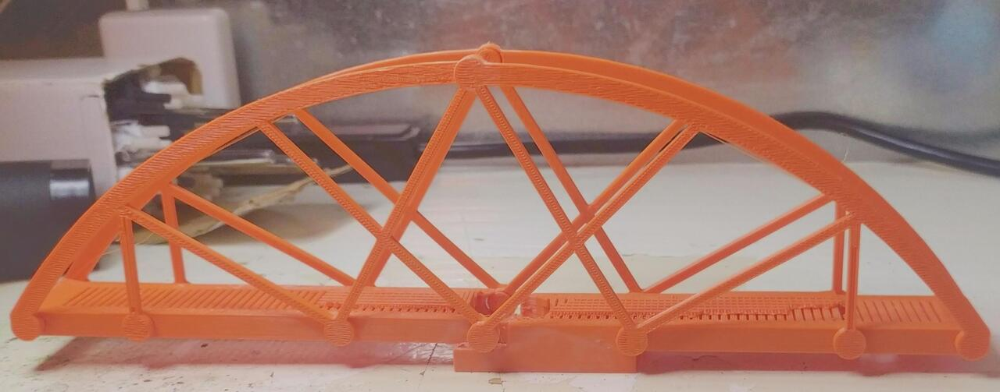
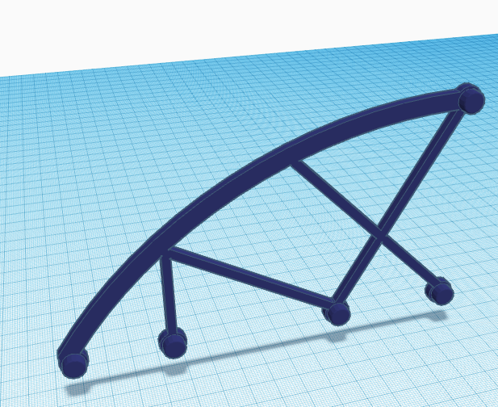
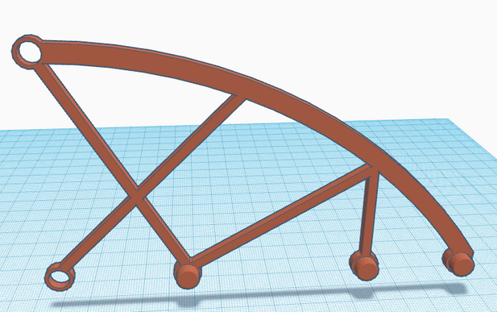

This is Edgar Tejada's CAD portfolio. All works published here are released under the CC BY 3.0 DEED unless otherwise noted.
This bridge is printed from 4 unique parts in ABS, 25% infill with a hexagonal infill pattern.
Bellow is the completed bridge printed from ABS, which had a mass of 100 grams but was able to hold up over 6 kg (13 lbs). This is a strength to weight ratio of 56. The below image links to the entire project write up.
Click the links below to see the 4 individual parts as 3d models!
 